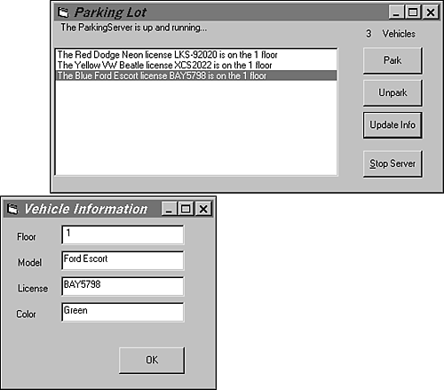

| < BACK | Make Note | Bookmark | CONTINUE > |
Code Examples
Parking Lot (File parkinglot.py)
This example generates a Python COM server that exposes a parking lot object. The example uses a Visual Basic graphical interface to manipulate the vehicles of this parking lot. Each vehicle is a Python Object that is also defined as a Python COM Server object.
The first thing to do is to generate two clsids: one for each object.
>>> import pythoncom >>> print pythoncom.CreateGuid() BD2CB7C0-3BB9-11D4-804E-0050041A5111 >>> print pythoncom.CreateGuid() BD2CB7C1-3BB9-11D4-804E-0050041A5111
Now, we take these ids and use them to create a module.
Listing 7.1 parkinglot.py
1: # File: parkinglot.py
2:
3: from win32com.server.exception import Exception
4: import win32com.server.util
5:
6: class ParkingServer:
7: _reg_clsid_ = '{ BD2CB7C0-3BB9-11D4-804E-0050041A5111} '
8: _reg_progid_ = 'Python.ParkingServer'
9: _public_methods_ = ['ParkVehicle', 'UnparkVehicle',
10: 'GetVehiclesCount', 'IdentifyVehicle',
11: 'GetLocationList']
12:
13: def __init__(self):
14: self.Vehicles = [Vehicle()]
15:
16: def ParkVehicle(self, floor=1, model="", license="", color=""):
17: VehicleToPark = Vehicle()
18: VehicleToPark.floor = floor
19: VehicleToPark.model = str(model)
20: VehicleToPark.license = str(license)
21: VehicleToPark.color = str(color)
22: self.Vehicles.append(VehicleToPark)
23:
24: def UnparkVehicle(self,index):
25: del self.Vehicles[index]
26:
27: def IdentifyVehicle(self, index):
28: return win32com.server.util.wrap(self.Vehicles[index])
29:
30: def GetLocationList(self):
31: return map(lambda x:x.GetLocation(), self.Vehicles)
32:
33: def GetVehiclesCount(self):
34: return len(self.Vehicles)
35:
36: class Vehicle:
37: _reg_clsid_ = '{ BD2CB7C1-3BB9-11D4-804E-0050041A5111} '
38: _reg_progid_ = 'Python.Vehicle'
39: _public_methods_ = ['GetLocation']
40: _public_attrs_ = ['floor','model','license','color']
41:
42: def __init__(self, floor=1, model = 'Dodge Neon',
license = 'LKS-92020', color = 'Red'):
43: self.floor = floor
44: self.model = model
45: self.license = license
46: self.color = color
47:
48: def GetLocation(self):
49: return 'The %s %s license %s is on the %d floor'% }
50: (self.color, self.model, self.license, self.floor)
51:
52: def RegisterClasses():
53: print "Registering COM servers…"
54: import win32com.server.register
55:
56: win32com.server.register.UseCommandLine(ParkingServer)
57: print "ParkingServer Class registered."
58:
59: win32com.server.register.UseCommandLine(Vehicle)
60: print "Vehicle Class registered."
61:
62: def UnRegisterClasses():
63: print "Unregistering COM server…"
64: import win32com.server.register
65:
66: win32com.server.register.UnregisterClasses(ParkingServer)
67: print "ParkingServer Class unregistered."
68:
69: win32com.server.register.UnregisterClasses(Vehicle)
70: print "Vehicle Class unregistered."
71:
72: if __name__=='__main__':
73: import sys
74: if "-unregister" in sys.argv:
75: UnRegisterClasses()
76: else:
77: RegisterClasses()
Lines 9–11: List of methods to be exported to the COM interface.
Line 13: Initializes parking with one vehicle [object].
Lines 20–21: As COM interfaces use Unicode objects, it is necessary to convert the objects to string.
Line 28: Wraps the Python Object before sending it to the COM client.
Line 31: Calls the appropriate GetLocation() method f or each Vehicle object in the Python List. Then, it returns a whole new list of strings.
Line 33: Counts the number of vehicles in the parking lot.
Line 52: Registers both COM servers.
Line 62: Unregisters both servers. (Unregistering them is necessary to clean up the Windows Registry.)
Line 72: Automatically registers the classes when the module is executed as a script.
Line 74: If the user calls the script at the command prompt passing the -unregister argument, the UnRegisterClasses() methods are executed.
When you have the module stored in the file, you can double-click on the file to execute it, or you can go to a DOS prompt and manually call it to register the server:
C:\ python parkinglot.py Registering COM server… ParkingServer Class registered. Vehicle Class registered.
Listing 7.2 implements the Visual Basic 5 project that provides the client interface for our Python COM server. It is the code for the main form.
Listing 7.2 frmMain.frm
1: Option Explicit
2: Public ParkingServer As Object
3: Public newVehicle As Object
4: Private Sub cmdPark_Click()
5: Set newVehicle = CreateObject("Python.Vehicle")
6: newVehicle.floor = 1
7: newVehicle.model = ""
8: newVehicle.license = ""
9: newVehicle.Color = ""
10: If frmVehicle.ModifyInfo(newVehicle) Then
11: ParkingServer.ParkVehicle newVehicle.floor, newVehicle.model,
newVehicle.license, newVehicle.Color
12: RefreshVehiclesList
13: End If
14: Set newVehicle = Nothing
15: End Sub
16:
17: Private Sub CmdUnpark_Click()
18: Dim CarSpot As Integer
19: Dim Vehicle As Object
20: If Vehicles.ListIndex = -1 Then
21: Exit Sub
22: Else
23: CarSpot = Vehicles.ListIndex
24: ParkingServer.UnparkVehicle CarSpot
25: RefreshVehiclesList
26: End If
27: End Sub
28:
29: Private Sub cmdUpdate_Click()
30: Dim CarSpot As Integer, Vehicle As Object
31: If Vehicles.ListIndex = -1 Then
32: Exit Sub
33: Else
34: CarSpot = Vehicles.ListIndex
35: Set Vehicle = ParkingServer.IdentifyVehicle(CarSpot)
36: If frmVehicle.ModifyInfo(Vehicle) Then RefreshVehiclesList
37: End If
38: End Sub
39:
40: Private Sub cmdInitializeServer_Click()
41: If ParkingServer Is Nothing Then
42: On Error GoTo cmdInitializeServer_Click_CreationError
43: Set ParkingServer = CreateObject("Python.ParkingServer")
44: On Error GoTo 0
45: lblStatus.Caption = "The ParkingServer is up and running…"
46: cmdInitializeServer.Caption = "&Stop Server"
47: Vehicles.Visible = True
48: cmdPark.Visible = True
49: CmdUpdate.Visible = True
50: CmdUnpark.Visible = True
51: Label2.Visible = True
52: lbvehicles_number.Visible = True
53: RefreshVehiclesList
54: Vehicles.ListIndex = 0
55: Vehicles.SetFocus
56: Exit Sub
57: Else
58: Vehicles.Visible = False
59: cmdPark.Visible = False
60: CmdUpdate.Visible = False
61: CmdUnpark.Visible = False
62: lbvehicles_number.Visible = False
63: Label2.Visible = False
64: Set ParkingServer = Nothing
65: cmdInitializeServer.Caption = "&Start Server"
66: lblStatus.Caption = "The ParkingServer is not running."
67: Exit Sub
68: End If
69: cmdInitializeServer_Click_CreationError:
70: MsgBox "An error has happened while initializing the ParkingServer."
71: End Sub
72:
73: Public Sub RefreshVehiclesList()
74: Dim VehiclesList As Variant, VehiclesInList As Variant,
highlighted As Integer
75: lbvehicles_number.Caption = ParkingServer.GetVehiclesCount
76: highlighted = Vehicles.ListIndex
77: Vehicles.Clear
78: VehiclesList = ParkingServer.GetLocationList
79: For Each VehiclesInList In VehiclesList
80: Vehicles.AddItem VehiclesInList
81: Next VehiclesInList
82: If highlighted < Vehicles.ListCount Then Vehicles.ListIndex =
highlighted
83: Vehicles.SetFocus
84: End Sub
85:
86: Private Sub Form_Load()
87: Vehicles.Visible = False
88: cmdPark.Visible = False
89: CmdUpdate.Visible = False
90: CmdUnpark.Visible = False
91: Label2.Visible = False
92: lblStatus.Caption = "The ParkingServer is not running."
93: End Sub
Lines 2–3: The Python COM Objects are declared as Objects at the Form level.
Line 14: Releases the Vehicle object from the memory.
Line 20: Check whether the list is empty.
Line 35: Calls the Python IdentifyVehicle() method, which returns a Vehicle Object according to the indexing position (spot) provided as the function argument.
Line 76: Stores the index associated to the selected vehicle.
Line 78: Python sends a list of strings that becomes an array-type Variant.
Lines 82–83: Returns the focus to the last selected list item.
Listing 7.3 is used by the project's form, which enables you to type each vehicle's data.
Listing 7.3 frmVehicle.frm
1: Public Function ModifyInfo(VehicleToModify As Object) As Boolean 2: txt_floor.Text = Str(VehicleToModify.floor) 3: txt_model.Text = VehicleToModify.model 4: txt_license.Text = VehicleToModify.license 5: txt_color.Text = VehicleToModify.Color 6: Show 1 7: VehicleToModify.floor = Val(txt_floor.Text) 8: VehicleToModify.model = txt_model.Text 9: VehicleToModify.license = txt_license.Text 10: VehicleToModify.Color = txt_color.Text 11: ModifyInfo = True 12: End Function 13: 14: Private Sub FormExit_Click() 15: Me.Visible = False 16: End Sub
Lines 2–5: The public attributes of the Vehicle Object, _public_attrs_, are transported to the form objects.
Lines 14–16: If you close the window, the values are not transported back to the form. You must click on the OK button, which hides the form and brings the control back to the ModifyInfo() function.
When you execute this project, you have an easy-to-use interface that connects to the COM servers and accesses all the public methods that are implemented (see Figure 7.6).
Figure 7.6. Parking lot demonstration.
If you have problems trying to connect to the server, check whether you have registered the class from the Python console.
| Last updated on 1/30/2002 Python Developer's Handbook, © 2002 Sams Publishing |
| < BACK | Make Note | Bookmark | CONTINUE > |